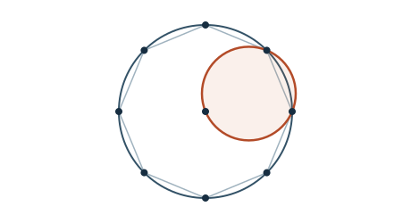

Erdős Problem 506
How few circles can a set of points determine?
Choose points in the plane so that no single line or circle contains them all. Count the distinct circles through at least three of the points. What is the smallest count for a given number of points?
Open the circle verification repositoryThe nine-point construction
Place eight points at the vertices of a regular octagon and add its centre. The eight vertices give one circle. Each of the 24 non-opposite pairs gives a different circle through the centre. The four opposite pairs are collinear with the centre. This configuration therefore determines exactly 25 circles.

Proof and verification
The archive gives 17 as the minimum for eight points. For nine or more, it includes the formula for the minimum and code for replaying the finite cases. A later joint paper gives shorter proofs for eight points and for every size from fifteen onward. Its reference [7] cites the archive.